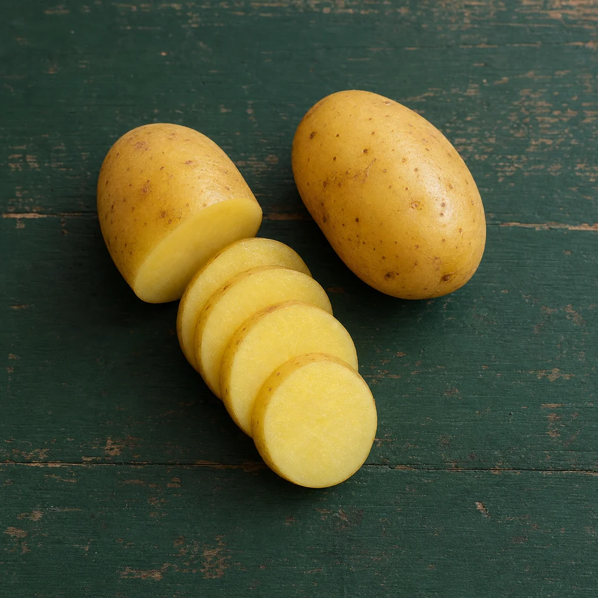
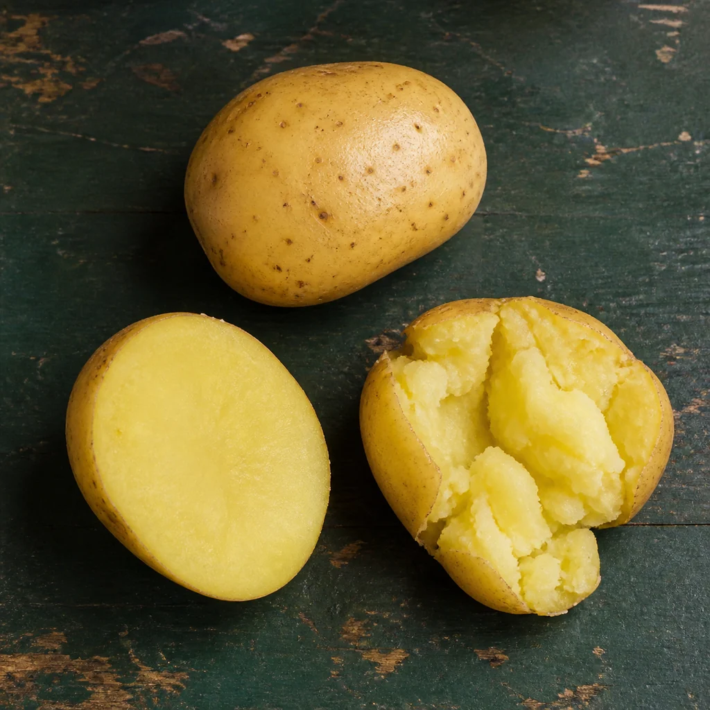
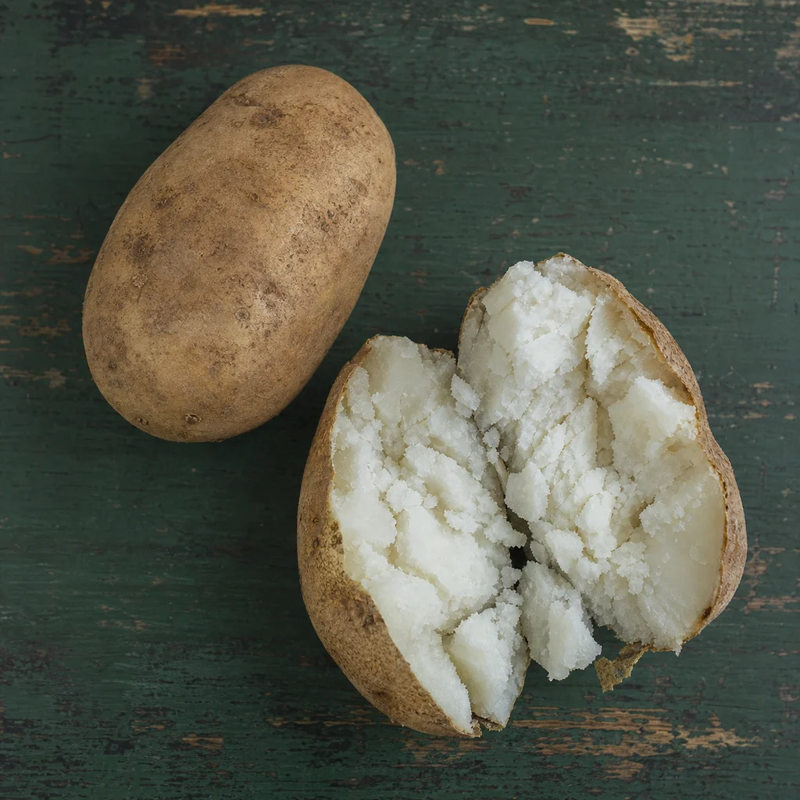

A field guide for translating recipe potatoes into something you can actually buy.
The short answer · Denmark
Yukon Gold is a behaviour, not a border.
It is a yellow-fleshed, middle-of-the-road potato: creamy enough to mash, firm enough to keep some shape. In Denmark, start with Folva—then let the dish decide.
AI-generated market study · varieties are illustrative, not visual identifiersFirst, ignore the passport
Buy the texture the recipe needs
Variety names change at borders. Cooking behaviour travels well. Look for one of these three positions on the potato spectrum.
Holds togetherBalancedFalls apart

A · Firm / waxy
Stays in one piece
Choose for potato salad, boiling whole, soups with distinct pieces, gratins with tidy slices, and rösti that should bind.
Bag words: firm, waxy, salad, boiling, kogefast.

B · All-purpose
The Yukon Gold zone
Choose for everyday roasting, creamy mash, casseroles, soups, wedges, and recipes that do not need an extreme texture.
Bag words: all-purpose, yellow, general purpose, type B, slightly floury.

C · Floury / starchy
Breaks into fluff
Choose for airy mash, baked potatoes, gnocchi, croquettes, crisp roast edges, and thickening a soup.
Bag words: floury, mealy, starchy, baking, melet.
Do not judge by skin colour alone. Red, yellow, and brown skins can all cover different textures. Season, soil, and storage also move a potato along the scale.
The market decoder
What should I buy where I live?
Showing the Denmark buying guide.
DenmarkDanmark
If the recipe says Yukon Gold
Buy Folva first.
It is the safest Danish one-bag substitute because it is used for boiling, mash, baking, and wedges. Maya is another broad option; Melody leans usefully toward mash and baking.
Keep shape
Sava, Ditta, or Santera; bags marked for kogning or kartoffelsalat
Middle
Folva, Maya; look for several uses printed on the bag
More fluffy
Melody or a bag marked til mos / melede kartofler
Danish reality: use labels and available varieties rotate. If the bag lists both boiling and mash or baking, it is probably in Yukon Gold territory.
SwedenSverige
Closest everyday buy
Fast potatis, Bintje, or Asterix
These cover the firmer side of Yukon Gold. For mash or a fluffy roast, move to mjölig potatis; King Edward is a familiar floury example.
Keep shape
Fast potatis
Middle
Bintje, Asterix, or a multi-use bag
More fluffy
Mjölig potatis, often King Edward
NorwayNorge
Closest everyday buy
Asterix or Folva
Both sit on the shape-holding side and work for many everyday dishes. Choose Pimpernel when a Yukon Gold recipe is specifically heading toward mash, soup, or a softer roast.
Keep shape
Kokefast; Asterix, Folva, Beate
Middle
Asterix or Folva, adjusted by dish
More fluffy
Melen; Pimpernel, Kerrs Pink, Mandelpotet
FinlandSuomi
Closest everyday buy
Yleisperuna · yellow code
Finland makes this unusually easy: the yellow-coded general-purpose category is the Yukon Gold zone. Matilda, Asterix, and Van Gogh are examples.
Keep shape
Kiinteä · green; Siikli, Nicola
Middle
Yleisperuna · yellow
More fluffy
Jauhoinen · red; Rosamunda, Puikula
Germany & AustriaDeutschland & Österreich
Closest everyday buy
Vorwiegend festkochend
This “mainly firm-cooking” middle category is the clearest functional translation of Yukon Gold.
Keep shape
Festkochend
Middle
Vorwiegend festkochend
More fluffy
Mehligkochend
Netherlands & BelgiumNederland & België
Closest everyday buy
Vrij vastkokend or iets kruimig
These labels sit between intact and crumbly. They work like an all-purpose yellow potato in most recipes.
Keep shape
Vastkokend
Middle
Vrij vastkokend / iets kruimig
More fluffy
Kruimig / zeer kruimig
France & BelgiumFrance & Belgique
Closest everyday buy
Polyvalente or “four & purée”
French bags often sell the use more clearly than the starch level. A multi-use yellow variety such as Monalisa or Bintje is a practical starting point.
Keep shape
Chair ferme; vapeur / salade
Middle
Polyvalente; four / rissolées
More fluffy
Chair farineuse; purée / frites
United KingdomUK
Closest everyday buy
All-rounder or smooth potato
Yukon Gold itself may be sold. Otherwise choose an all-rounder such as Desiree. Maris Piper is flourier: excellent for mash, chips, and roasties, less faithful for salad.
Keep shape
Salad / waxy; Charlotte
Middle
All-rounder / smooth; Desiree
More fluffy
Fluffy; Maris Piper, King Edward
IrelandÉire
Closest everyday buy
Rooster
Rooster is the readily understood Irish all-rounder and has yellow, floury flesh. It is a little fluffier than Yukon Gold, so use a waxier potato when slices must stay exact.
Keep shape
Waxy / salad potato
Middle
Rooster
More fluffy
Kerrs Pink, Golden Wonder, Maris Piper
Spain & PortugalEspaña · Portugal
Closest everyday buy
Monalisa / multi-use
Monalisa is a useful yellow, semi-waxy all-rounder. Choose Agria when the Yukon Gold recipe is really about frying or crisp roast edges.
Keep shape
Para cocer / para cozer
Middle
Multiusos; Monalisa
More fluffy
Para freír; Agria
ItalyItalia
Closest everyday buy
Patate a pasta gialla, all-purpose
Yellow-fleshed multi-use potatoes are the practical match. For gnocchi or very airy mash, ignore the colour shortcut and choose a bag marked floury.
Keep shape
Sode / a pasta compatta
Middle
A pasta gialla / per tutti gli usi
More fluffy
Farinose; for purè / gnocchi
Poland & Central EuropeA · B · C
Closest everyday buy
Cooking type B
The letter is more dependable than a translated variety name. Type B is general-purpose: firm after cooking but easy to crush with a fork.
Keep shape
A / AB · Polish sałatkowy
Middle
B / AB-B · Polish ogólnoużytkowy; Czech/Slovak varný typ B
More fluffy
C / BC · Polish mączysty
Canada & United StatesNorth America
Closest everyday buy
Yukon Gold or yellow potato
Yukon Gold is the named variety. Supermarket “yellow potatoes” are often sold as the same practical category, though the exact cultivar may differ.
Keep shape
Waxy, red, new, or fingerling potato
Middle
Yukon Gold / yellow potato
More fluffy
Russet / Idaho / baking potato
Australia & New ZealandANZ
Closest everyday buy
All-purpose potato
Follow the end-use label first. In New Zealand, Rua, Moonlight, Vivaldi Gold, Frisia, Ilam Hardy, Maris Anchor, and Desiree are listed as all-purpose examples.
Keep shape
Waxy / smooth / boiling / salad
Middle
All-purpose / between smooth and fluffy
More fluffy
Floury / fluffy / roasting / mashing
Anywhere elseAsk by use
Say this at the market
“A yellow, medium-starch, all-purpose potato.”
If that does not translate, name the dish: “one that roasts but does not completely fall apart,” or “one that makes creamy, not fluffy, mash.”
Keep shape
Ask for salad or boiling potatoes
Middle
Ask for everyday or all-purpose potatoes
More fluffy
Ask for mash, baking, or frying potatoes
The dish has the final vote
A Yukon Gold substitute changes with the recipe
When the original author names a variety, read the next verb before you buy.
Salad · soup pieces · neat gratin
Move firmer
Denmark: Sava, Ditta, or Santera. Europe: type A / firm / waxy.
Roast · wedges · casserole
Stay in the middle
Denmark: Folva or Maya. Europe: type B / all-purpose / slightly floury.
Creamy mash · chowder
Middle to floury
Denmark: Folva, Melody, or Maya. Use floury only if a lighter, drier result is welcome.
Gnocchi · croquettes · fluffy mash
Ignore “Yukon” and go floury
The technique needs low moisture more than yellow colour. Buy type C / floury / mealy.
Fries · crisp roast potatoes
Middle to floury
More starch gives crisper edges. A frying or baking label beats a perfect name match.
Boiled whole · fondant · hasselback
Keep enough structure
Choose firm or a firmer all-purpose potato so the cooked shape survives handling.
American recipe decoder
Four names you will keep meeting
Medium starch · yellow flesh · all-purpose
Translate to “balanced”
In Denmark, begin with Folva. Elsewhere, choose type B, all-purpose, slightly floury, or the middle label used locally.
High starch · dry · floury
Translate to “floury”
Buy a baking or mashing potato: type C, mehligkochend, mjölig, jauhoinen, or the local equivalent.
Lower starch · moist · firm
Translate to “firm or waxy”
Buy salad or boiling potatoes: type A, festkochend, fast, or Sava/Ditta in Denmark.
Small, elongated, usually firm
Translate by shape and texture
Look for small waxy salad potatoes, ratte/aspargeskartofler, or another long firm variety. “New potatoes” are a seasonal fallback, not the same cultivar.
When the bag tells you nothing
Cook one before you commit the whole bag
Simmer one potato until a knife reaches the centre without resistance.
Cut it. A clean, moist slice is firm; feathered edges are middle; cracks and crumbs are floury.
Write the variety down. The same name can shift with season and storage, but your note is still more useful than skin colour.
Evidence & limits
A practical translation, not a claim of identical varieties
Yukon Gold, Folva, and every named alternative are distinct cultivars. The recommendations match cooking behaviour and common retail language. Harvest timing, soil, weather, and storage can change the texture of the same variety, so the dish and the bag’s use label outrank the name.